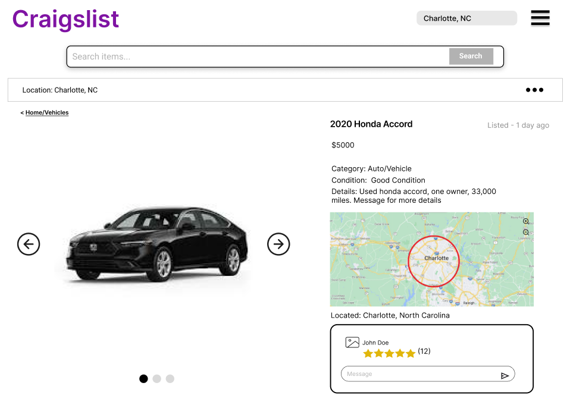
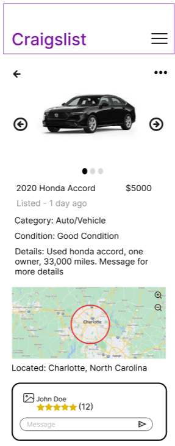
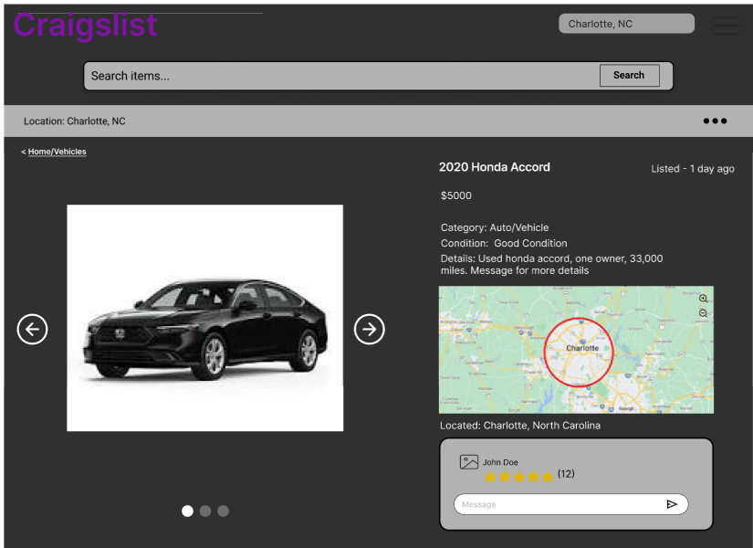
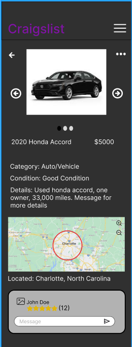

Week 6 – High-Fidelity Prototype
Overview
In Week 6, we developed a high-fidelity interactive prototype that simulates core user flows across both mobile and desktop layouts. This prototype focuses on interaction design, visual feedback, and responsive behavior rather than real data functionality.
My Contribution – Item Listing Page
I designed the high-fidelity item listing page for both mobile and desktop views. My design focuses on clear information hierarchy, interactive media browsing, and user-to-seller communication.
Light Mode (Desktop & Mobile)
Desktop View

Mobile View

Dark Mode (Desktop & Mobile)
Desktop View

Mobile View

Key Interactions
- Image carousel allows users to click through listing photos
- Map supports zoom and location exploration
- Message input allows direct communication with seller
- Seller rating is clearly visible and easy to interpret
- Search bar provides a clear entry point for navigation
Responsive Design
The layout adapts between desktop and mobile by reorganizing content into a vertical flow for smaller screens. Navigation shifts to a hamburger menu on mobile, and touch-friendly elements are emphasized.
Design Impact
This prototype improves usability by creating a clear visual hierarchy, reducing clutter, and providing intuitive interactions. The addition of dark mode enhances accessibility, while interactive elements such as image navigation and messaging improve overall user engagement.